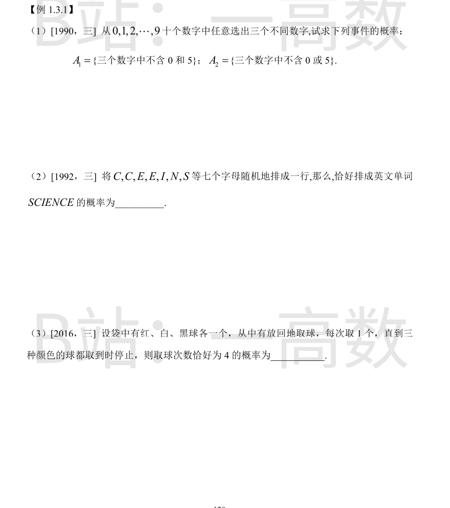
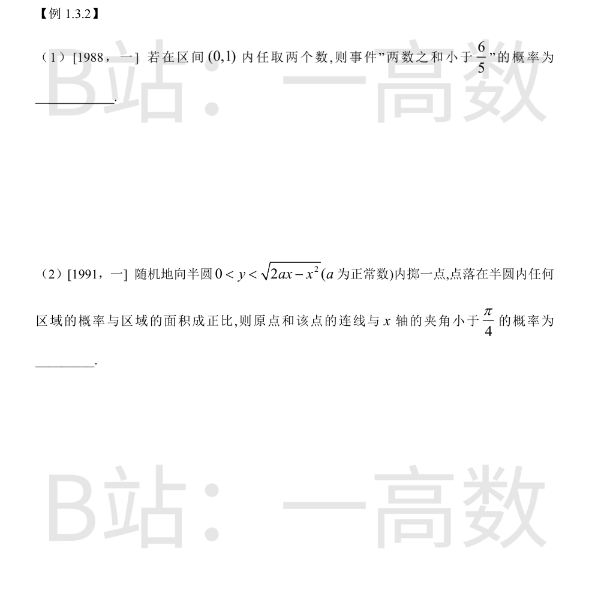

总取法 $\binom{10}{3}=120$。
$$P(A_1)=\frac{\binom{8}{3}}{\binom{10}{3}}=\frac{56}{120}=\frac{7}{15}$$
$\bar A_2$=\{既含 0 又含 5\}，其取法数为 $\binom{8}{1}=8$，故
$$P(A_2)=1-\frac{8}{120}=\frac{14}{15}$$
7 个字母含两个重复 C、两个重复 E，随机排列总数为
$$\frac{7!}{2!\,2!}=\frac{5040}{4}=1260$$
恰好排成 SCIENCE 只有 1 种排法，故 $P=\dfrac{1}{1260}$。
每次取球等可能地取到 3 色之一。停止次数 $T=4$ 等价于：前 3 次恰出现 2 种颜色，第 4 次取到缺的第 3 种颜色。
前 3 次恰含 2 色：先选定缺哪一色（3 种），前 3 次在另 2 色中取且两色都出现：$2^3-2=6$ 种；第 4 次取缺色：1 种。
$$P=\frac{3\times 6\times 1}{3^4}=\frac{18}{81}=\frac29$$
（验算：$P(T\le 4)=\dfrac{3^4-3\cdot2^4+3}{3^4}=\dfrac49$，$P(T\le3)=\dfrac{3^3-3\cdot2^3+3}{3^3}=\dfrac29$，$P(T=4)=\dfrac49-\dfrac29=\dfrac29$。）

几何概型：样本空间为单位正方形 $[0,1]^2$，面积 1。事件 $\{x+y<6/5\}$ 的补集为正方形内 $x+y\ge 6/5$ 的直角三角形，顶点 $(1/5,1),(1,1),(1,1/5)$，直角边长 $4/5$，面积 $\dfrac12\left(\dfrac45\right)^2=\dfrac{8}{25}$。
$$P=1-\frac{8}{25}=\frac{17}{25}$$
半圆为 $(x-a)^2+y^2<a^2,\ y>0$，面积 $\dfrac{\pi a^2}{2}$。夹角小于 $\dfrac{\pi}{4}$ 即 $y<x$。
直线 $y=x$ 与圆交于 $(0,0)$ 与 $(a,a)$。半圆内 $y>x$ 部分的面积：
$$\int_0^a\left(\sqrt{2ax-x^2}-x\right)dx=\frac{\pi a^2}{4}-\frac{a^2}{2}$$
（第一个积分是半径 $a$ 的四分之一圆面积。）故所求概率
$$P=1-\frac{\dfrac{\pi a^2}{4}-\dfrac{a^2}{2}}{\dfrac{\pi a^2}{2}}=1-\frac12+\frac1\pi=\frac12+\frac1\pi$$